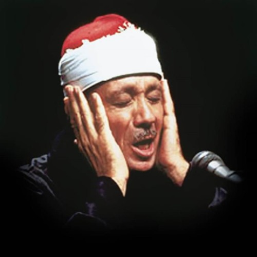

اسم السورة

متصفحك لا يدعم تشغيل الصوت
الرجوع للقائمة
عبد الباسط عبد الصمد مجود
عبد الباسط عبد الصمد مرتل
بدر التركي
فارس عباد
المنشاوي
محمد أيوب
محمد الفقيه
ماهر المعيقلي
ياسر الدوسري
عبد الرحمن السديس
علي جابر
ناصر القطامي
سعد الغامدي
محمود خليل الحصري
محمود علي البنا